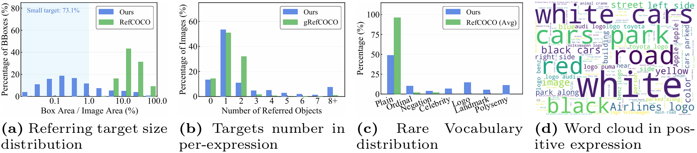

Benchmark Design
An overview and qualitative examples of our OpenRef benchmark.

Figure 1: Comprehensive visualization of OpenRef Benchmark.
Benchmark Statistics
OpenRef establishes a large-scale, robust evaluation environment tailored for open-world Referring Expression Comprehension. The detailed statistical composition is summarized below:
Total Expressions
Total Images
Positive Expr.
Negative Expr.

Figure 2: Detailed statistical distribution of referring target sizes, target numbers, and phrase vocabularies.
Across these samples, OpenRef comprises a total of 37,698 object instances. Notably, each expression refers to an average of 4.24 objects, presenting a significant challenge for precise localization and negative rejection reliability (N3R).